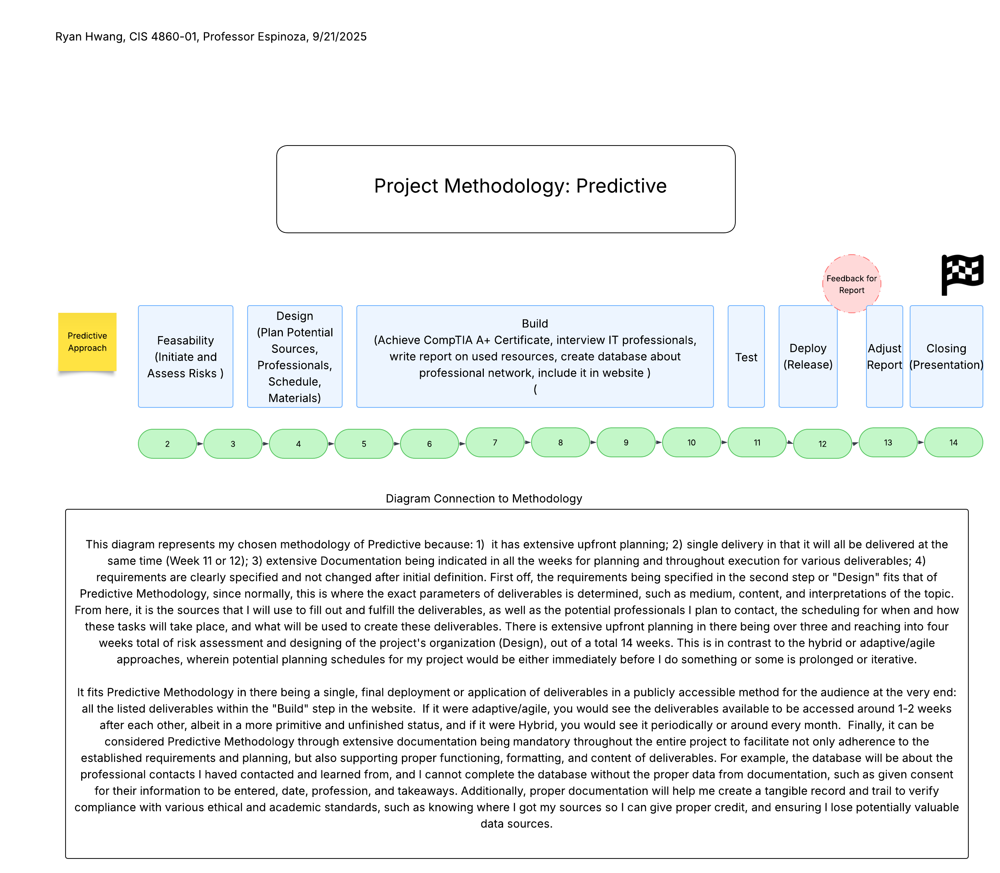
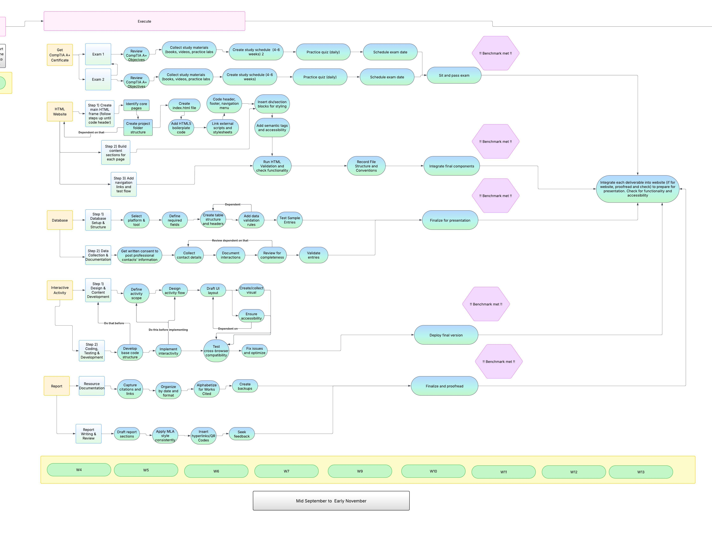
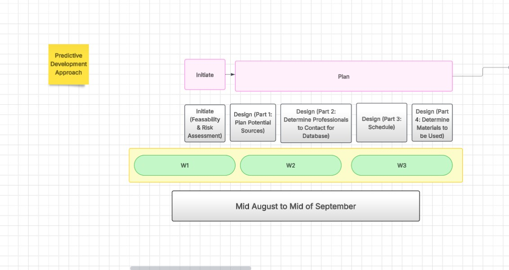
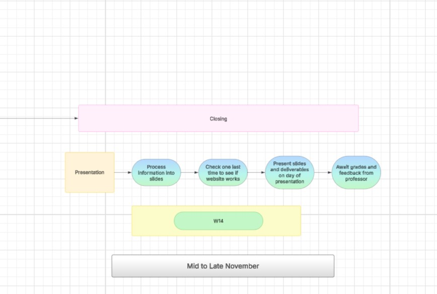

Student Name:
Ryan Hwang
Course:
Managing IT Projects
Semester:
Fall 2025
Project Charter - Managing IT Projects Course
The purpose of this project is to build a professional portfolio focused on foundational IT qualifications and knowledge, serving as both a record of academic achievement and a platform to demonstrate skills to potential employers.
The project deliverable will be a personal portfolio website that organizes my completed CompTIA ITF+, A+, and other coursework into a structured, accessible, and visually appealing digital format. The portfolio will include an interactive project demonstrating database integration to showcase applied technical skills.
Vision: To develop a portfolio that highlights technical knowledge and IT skills, supporting career goals in information technology and project management.
Mission: To strategically document and present professional growth in IT, aligning with long-term objectives of pursuing project management and leadership roles in the tech industry.
Strategic Alignment: This project aligns with the Managing IT Projects course by implementing project management methodologies and demonstrating their practical application in an academic setting.
This portfolio project provides value by:
By completing this project, I will have a tangible artifact to demonstrate both technical and managerial capabilities.
| Stakeholder | Role | Interest |
|---|---|---|
| Student (myself) | Project Manager / Developer | High |
| Professor | Instructor / Evaluator | Medium |
| Potential Employers | End Users | High |
| Peers | Reviewers / Support | Medium |
| Career Services | Advisors | Medium |
| Category | Estimated Cost |
|---|---|
| Labor | $0 (self-driven) |
| Software / Equipment | $370 (certification exams, hosting, database tools) |
| Materials | $75 (reference materials, books) |
| Services | $0 |
| Contingency | $50 |
The project will follow a predictive methodology, aligning with traditional project management phases: Initiating, Planning, Executing, Monitoring & Controlling, and Closing.




Note for Future Updates:
This charter will be expanded throughout the semester as we cover additional project management components including:
Keep this HTML file – you'll be adding to it as the semester progresses!